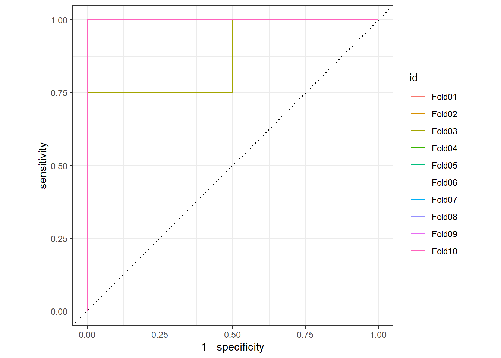
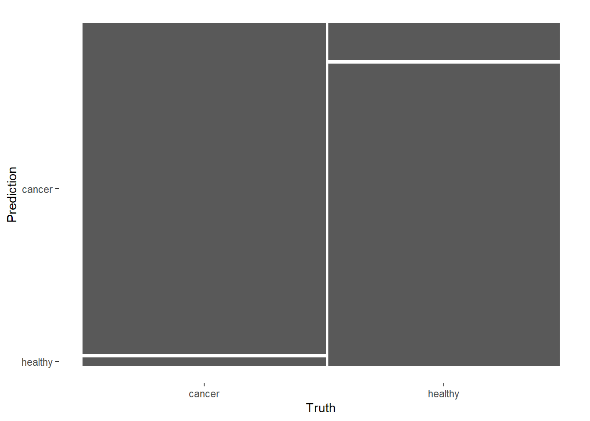
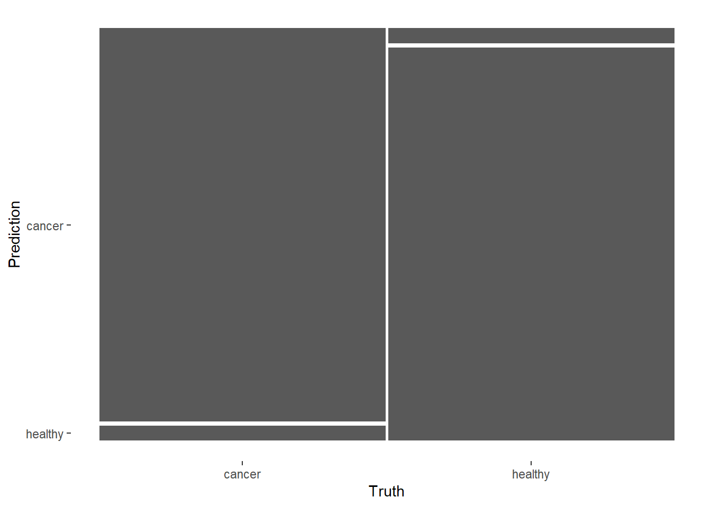

I’ve known the tidymodel framework for a while, but never tried it. Tidymodel is the new framework from Max Kuhn, the author of caret framework in R. In the past week, I read the Tidy Modeling with R book and tried tidymodel system for the first time.
In this post, I fit a random forest model for a classification problem using tidymodel. Just a quick first try of this new system.
The dataset is from sda package. There is a dataset singh2002 that includes Gene expression data (6033 genes for 102 samples) from the microarray study of Singh et al. (2002)..
library(tidymodels)
library(sda)
tidymodels_prefer()
data(singh2002)For quick processing, I just keep the first 100 genes in the model. The dataset consists 102 samples, 52 cancer and 50 healthy samples.
gexpr <- tibble(as.data.frame(singh2002$x))
gexpr$label <- singh2002$y
gexpr <- select(gexpr, label, V1:V100)table(gexpr$label)##
## cancer healthy
## 52 50set.seed(123)
gexpr_split <- initial_split(gexpr, strata = label)
gexpr_train <- training(gexpr_split)
gexpr_test <- testing(gexpr_split)set.seed(234)
gexpr_folds <- vfold_cv(gexpr_train, strata = label)
gexpr_folds## # 10-fold cross-validation using stratification
## # A tibble: 10 x 2
## splits id
## <list> <chr>
## 1 <split [68/8]> Fold01
## 2 <split [68/8]> Fold02
## 3 <split [68/8]> Fold03
## 4 <split [68/8]> Fold04
## 5 <split [68/8]> Fold05
## 6 <split [68/8]> Fold06
## 7 <split [68/8]> Fold07
## 8 <split [69/7]> Fold08
## 9 <split [69/7]> Fold09
## 10 <split [70/6]> Fold10The [usemodels] package helps to quickly create code snippets to fit models using the tidymodels framework.
usemodels::use_ranger(label ~ ., data = gexpr_train)## ranger_recipe <-
## recipe(formula = label ~ ., data = gexpr_train)
##
## ranger_spec <-
## rand_forest(mtry = tune(), min_n = tune(), trees = 1000) %>%
## set_mode("classification") %>%
## set_engine("ranger")
##
## ranger_workflow <-
## workflow() %>%
## add_recipe(ranger_recipe) %>%
## add_model(ranger_spec)
##
## set.seed(29103)
## ranger_tune <-
## tune_grid(ranger_workflow, resamples = stop("add your rsample object"), grid = stop("add number of candidate points"))ranger_recipe <-
recipe(formula = label ~ ., data = gexpr_train)ranger_spec <-
rand_forest(trees = 1000) %>%
set_mode("classification") %>%
set_engine("ranger")ranger_workflow <-
workflow() %>%
add_recipe(ranger_recipe) %>%
add_model(ranger_spec)doParallel::registerDoParallel()
set.seed(12345)
ranger_rs <-
fit_resamples(ranger_workflow,
resamples = gexpr_folds,
control = control_resamples(save_pred = TRUE)
)10-fold CV summary
collect_metrics(ranger_rs, summarize = TRUE)## # A tibble: 2 x 6
## .metric .estimator mean n std_err .config
## <chr> <chr> <dbl> <int> <dbl> <chr>
## 1 accuracy binary 0.932 10 0.0297 Preprocessor1_Model1
## 2 roc_auc binary 0.988 10 0.0125 Preprocessor1_Model1Performance of each fold
collect_metrics(ranger_rs, summarize = FALSE)## # A tibble: 20 x 5
## id .metric .estimator .estimate .config
## <chr> <chr> <chr> <dbl> <chr>
## 1 Fold01 accuracy binary 1 Preprocessor1_Model1
## 2 Fold01 roc_auc binary 1 Preprocessor1_Model1
## 3 Fold02 accuracy binary 1 Preprocessor1_Model1
## 4 Fold02 roc_auc binary 1 Preprocessor1_Model1
## 5 Fold03 accuracy binary 0.75 Preprocessor1_Model1
## 6 Fold03 roc_auc binary 0.875 Preprocessor1_Model1
## 7 Fold04 accuracy binary 0.875 Preprocessor1_Model1
## 8 Fold04 roc_auc binary 1 Preprocessor1_Model1
## 9 Fold05 accuracy binary 1 Preprocessor1_Model1
## 10 Fold05 roc_auc binary 1 Preprocessor1_Model1
## 11 Fold06 accuracy binary 1 Preprocessor1_Model1
## 12 Fold06 roc_auc binary 1 Preprocessor1_Model1
## 13 Fold07 accuracy binary 1 Preprocessor1_Model1
## 14 Fold07 roc_auc binary 1 Preprocessor1_Model1
## 15 Fold08 accuracy binary 0.857 Preprocessor1_Model1
## 16 Fold08 roc_auc binary 1 Preprocessor1_Model1
## 17 Fold09 accuracy binary 1 Preprocessor1_Model1
## 18 Fold09 roc_auc binary 1 Preprocessor1_Model1
## 19 Fold10 accuracy binary 0.833 Preprocessor1_Model1
## 20 Fold10 roc_auc binary 1 Preprocessor1_Model1Plot the 10 fold ROC, but most of them have AUC=1.
collect_predictions(ranger_rs) %>%
group_by(id) %>%
roc_curve(label, .pred_cancer) %>%
autoplot()
Averaged confusion matrix.
conf_mat_resampled(ranger_rs, tidy = FALSE) %>%
autoplot()
final_fitted <- last_fit(ranger_workflow, gexpr_split)
collect_metrics(final_fitted) ## # A tibble: 2 x 4
## .metric .estimator .estimate .config
## <chr> <chr> <dbl> <chr>
## 1 accuracy binary 1 Preprocessor1_Model1
## 2 roc_auc binary 1 Preprocessor1_Model1collect_metrics(final_fitted)## # A tibble: 2 x 4
## .metric .estimator .estimate .config
## <chr> <chr> <dbl> <chr>
## 1 accuracy binary 1 Preprocessor1_Model1
## 2 roc_auc binary 1 Preprocessor1_Model1All 26 samples were correct.
collect_predictions(final_fitted) %>%
conf_mat(label, .pred_class)## Truth
## Prediction cancer healthy
## cancer 13 0
## healthy 0 13The confusion matrix plot is a little confusing. It looks like there are incorrect classfication, while the model predicts all 26 samples correctly.
collect_predictions(final_fitted) %>%
conf_mat(label, .pred_class) %>%
autoplot()
Some things I didn’t cover in this post.
Useful links:
Some thoughts on tidymodel:
The tidymodel ecosystem looks like a solid platform for modeling building and testing in R. I like it has so many modules that can cover almost all statistical models. For time-series data, use tidyverts.
However, because of tidymodel’s modularity, it contains so many packages and so many functions. It does not offer an all-in-one system like caret (and it will probably never be).
I also have concerns on tidymodel on speed and memory usage. Anyway the tidymodel is definitely an interesting modeling system. I will try it more using my real research problems.